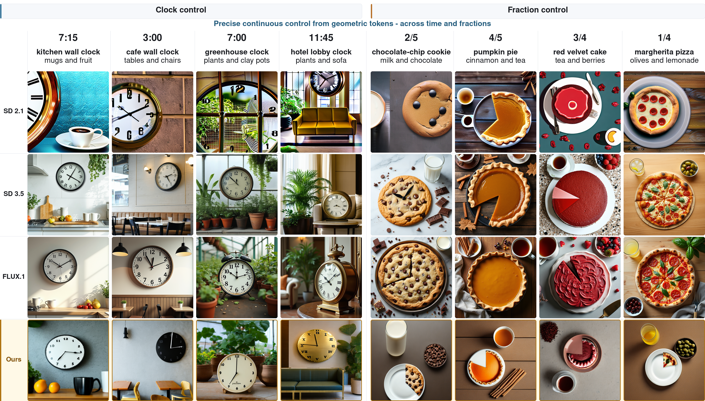
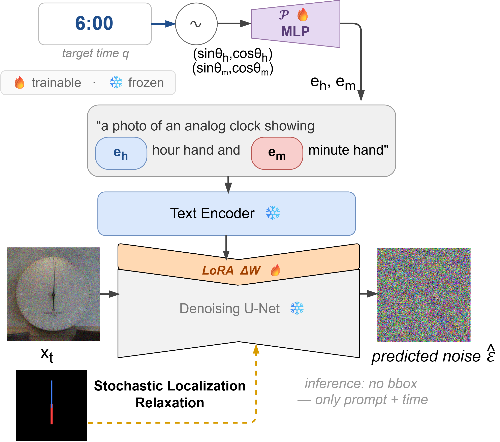
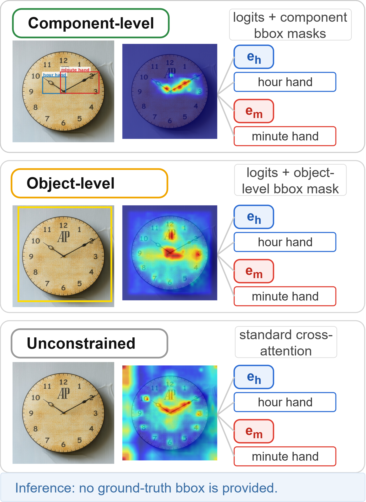
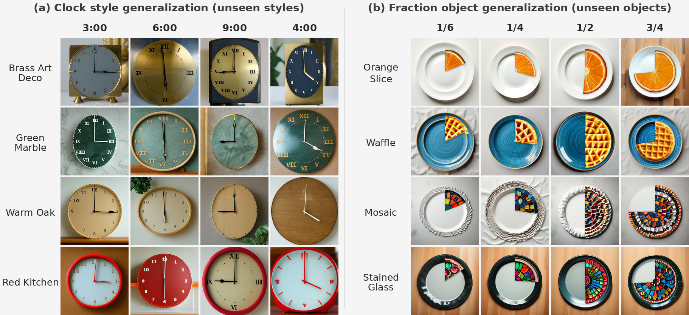
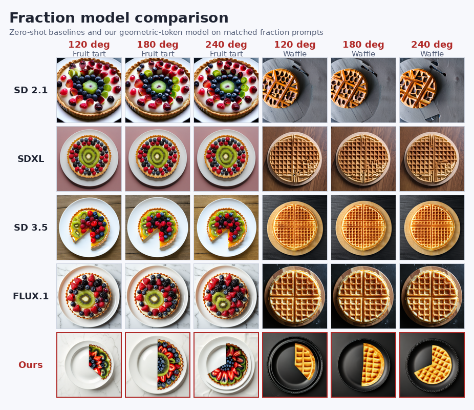
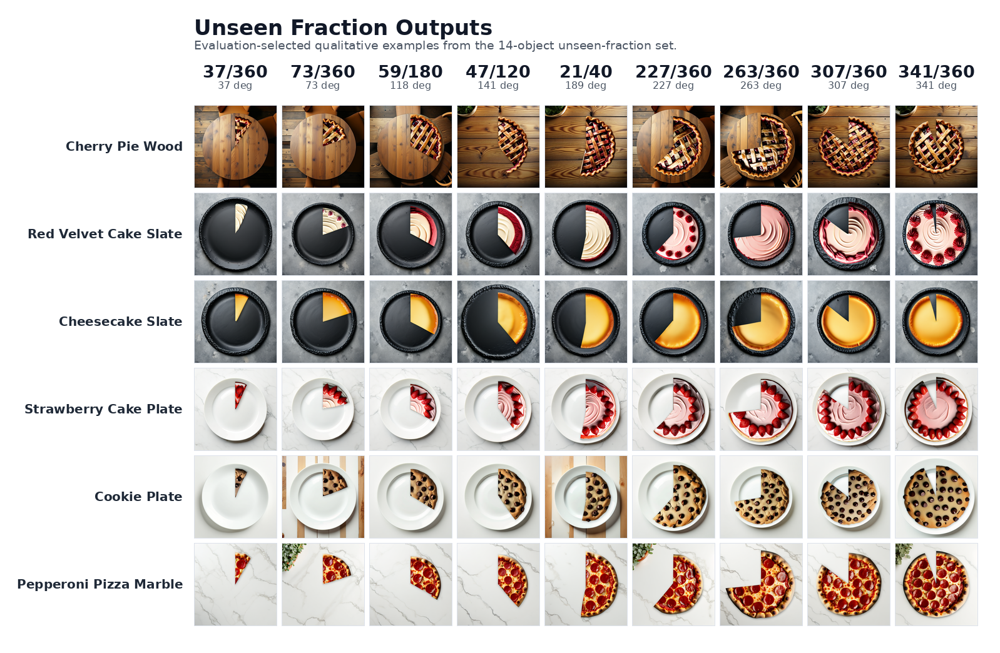
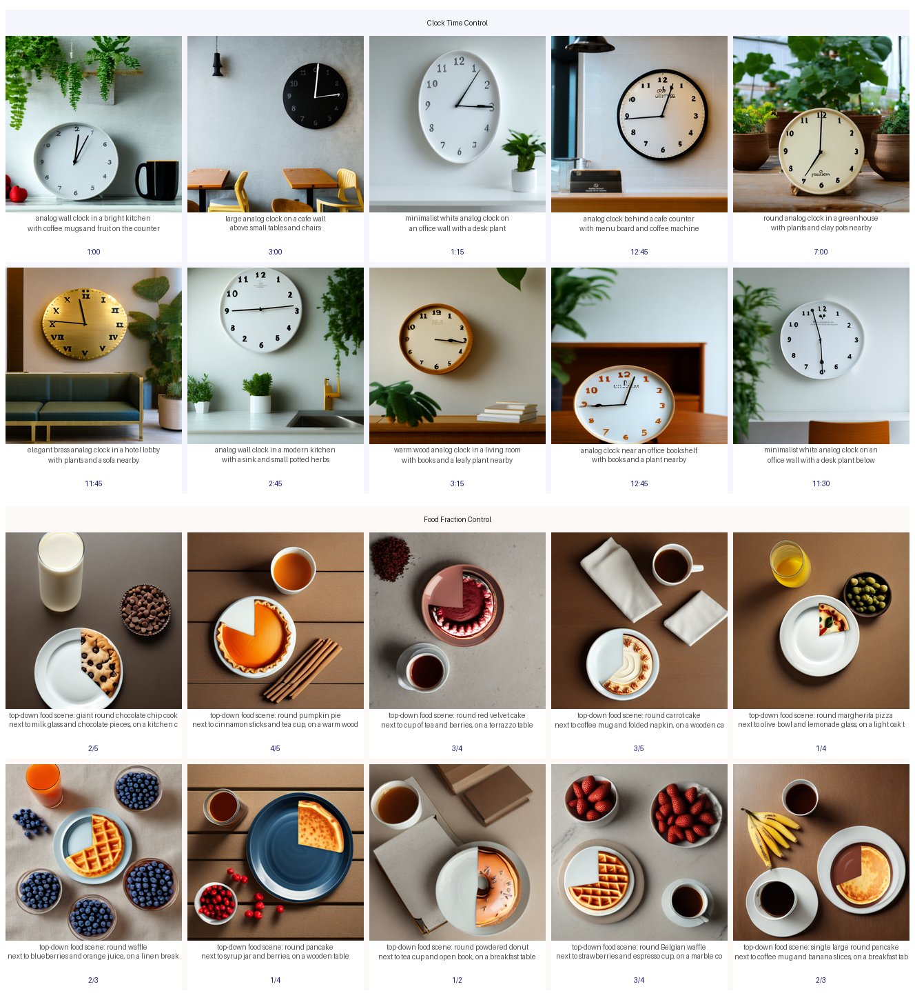

Overview examples comparing precise clock-time and fraction control across several image generators. Each column uses a fixed target value and prompt; the bottom row shows our geometry-token model.
Abstract
Current text-to-image models often fail when a prompt requires an object to encode a precise continuous quantity, such as an analog clock showing a specific time or a circular object showing a specific fraction. We represent these quantities as periodic geometric features, map them to CLIP-compatible token embeddings, and inject them before the text encoder.
During training, bounding boxes provide privileged spatial guidance for the geometric tokens, while Stochastic Localization Relaxation (SLR) varies the localization supervision from component-level to object-level to unconstrained attention.
Method

Target values are converted to periodic angle features, projected into role-specific token embeddings, and inserted into the prompt before the frozen text encoder.

Training alternates between component-level, object-level, and unconstrained attention localization so the model learns to use privileged boxes without requiring them at test time.
Periodic encoding and geometric tokens
We represent clock-hand angles and circular-sector boundaries using periodic sine-cosine features, enabling smooth control across the angular range. A lightweight projection network maps these features to role-specific tokens, which are inserted into the prompt before the frozen text encoder. Only the projection network and diffusion LoRA adapters are trained, separately for clocks and fractions.
Stochastic Localization Relaxation
During training, SLR varies attention guidance between component-level boxes (55%), a shared object box (30%), and unconstrained attention (15%). This grounds each token in the correct visual region while teaching the model to operate without spatial guidance. Inference requires only the text prompt and target value.
Hand-swap preference loss
For clocks, a second training phase reduces confusion between hour- and minute-hand roles. We compare correct token assignments with a hard negative formed by swapping the two hand embeddings under identical noise conditions. Alongside the diffusion loss, the preference loss rewards greater improvement over a fixed reference for the correct assignment. This additional objective is used only for clocks.
Results

These examples evaluate whether the learned geometric tokens remain controllable across target values and object appearances beyond the exact training samples.

We compare zero-shot fraction generations from SD 2.1, SDXL, SD 3.5, and Flux.1 against our geometric-token model using matched fruit tart and waffle prompts while varying only the target fraction. The baseline models often preserve realistic appearance, but the requested visible portion is not reliably controlled.
Clock Control Videos
For each visualization, the text prompt and random seed are fixed while the target time is swept from 00:00 to 11:59 in 1-minute steps. This isolates the effect of changing only the geometric token values.
Fraction Control Videos
For each visualization, the object prompt and random seed are fixed while the target sector angle is swept from 010 to 350 degrees. The videos show how the generated portion changes as only the fraction geometry changes.
Additional Qualitative Results

The targets in this grid use fraction angles that are not part of the 5-degree training grid, illustrating interpolation behavior on held-out fraction values.

These scene-level examples test whether the same geometric-token controls remain usable when the controlled object appears with additional surrounding context.